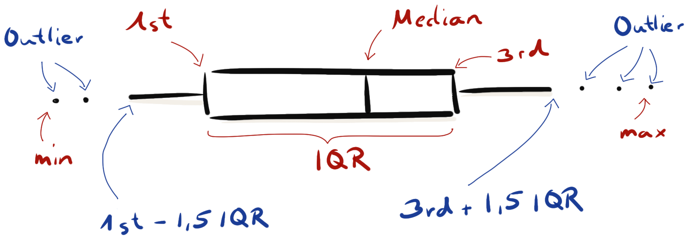
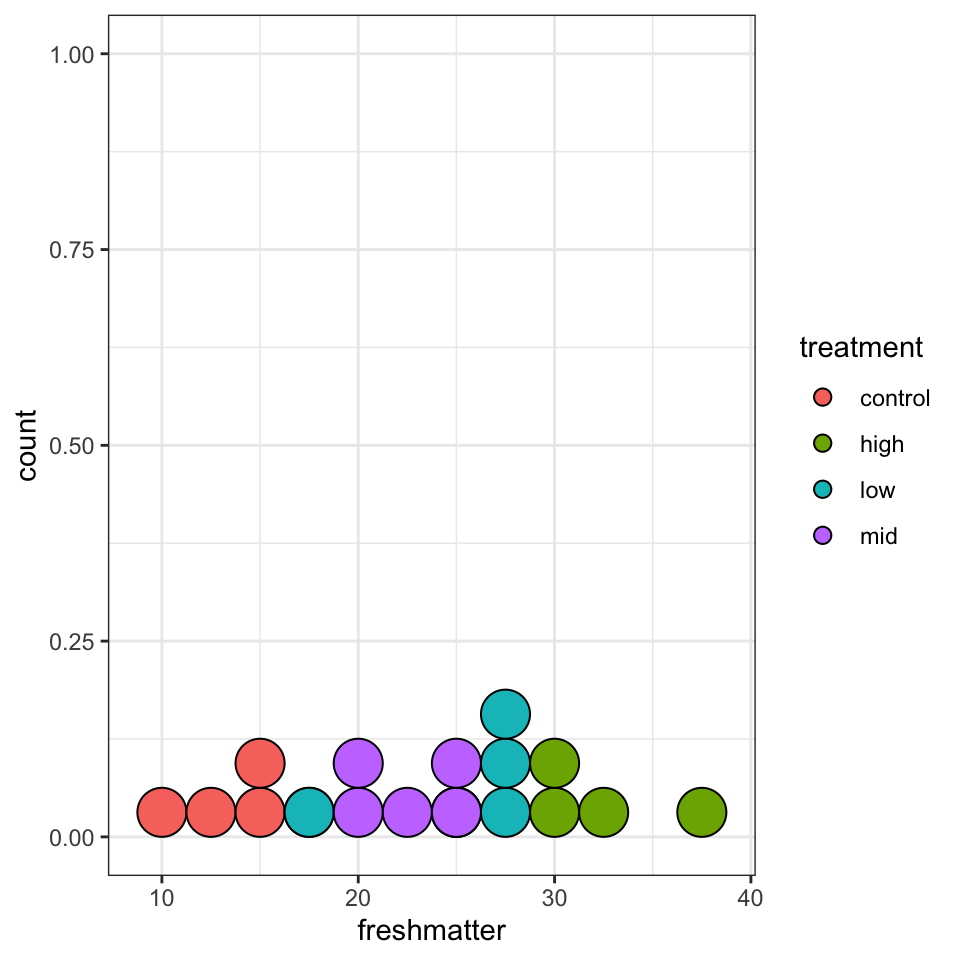

Grundlagen in ggplot()
data_tbl <- read_excel(file.path("data/germination_data.xlsx"))
ggplot(data = data_tbl, aes(x = treatment, y = freshmatter))
Häufig verwendete Abbildungen
Histogramm
ggplot(data = data_tbl, aes(x = freshmatter)) +
geom_histogram(binwidth = 2.5, fill = "gray", color = "black") +
theme_bw()Wenn wir viele Beobachtungen haben. Viele meint mehr als zwanzig Beobachtungen.
Density Plot
ggplot(data = data_tbl, aes(x = freshmatter)) +
geom_density(fill = "gray", color = "black") +
xlim(0, 50) +
theme_bw()Wenn wir viele Beobachtungen.
Boxplot

ggplot(data = data_tbl, aes(x = treatment, y = freshmatter,
fill = treatment)) +
geom_boxplot() +
theme_bw()ggplot(data = data_tbl, aes(x = treatment, y = freshmatter,
fill = treatment)) +
geom_boxplot() +
geom_jitter(width = 0.25) +
theme_bw()
Wenn wir wenige Beobachtungen haben.
Dotplot
Wenn wir ganz wenige Beobachtungen haben.
ggplot(data = data_tbl, aes(x = treatment, y = root_health,
fill = treatment)) +
geom_dotplot(binaxis = "y", stackdir = "center") +
theme_bw()Bin width defaults to 1/30 of the range of the data. Pick better value with `binwidth`.ggplot(data = data_tbl, aes(x = freshmatter, fill = treatment)) +
geom_dotplot(method="histodot", binwidth = 2.5) +
theme_bw()
ggplot(data = data_tbl, aes(x = treatment, y = freshmatter,
fill = treatment)) +
geom_violin() +
geom_dotplot(binaxis = "y", stackdir = "center", fill = "black") +
theme_bw()Bin width defaults to 1/30 of the range of the data. Pick better value with `binwidth`.
ggplot(data = data_tbl, aes(x = treatment, y = root_health,
fill = treatment)) +
geom_dotplot(binaxis = "y", stackdir = "center") +
stat_summary(fun = median, fun.min = median, fun.max = median,
geom = "crossbar", width = 0.5) +
theme_bw()Bin width defaults to 1/30 of the range of the data. Pick better value with `binwidth`.
Scatterplot
ggplot(data = data_tbl, aes(x = freshmatter, y = drymatter)) +
geom_point() +
stat_smooth(method = "lm", se = FALSE) +
theme_bw()`geom_smooth()` using formula 'y ~ x'
Mosaic Plot
Abbildungen beschriften
ggplot(data = data_tbl, aes(x = treatment, y = freshmatter,
fill = treatment)) +
geom_boxplot() +
labs(title = "Frischgewicht in Abhängigkeit von der Behandlung",
x = "Behandlung", y = "Frischgewicht in kg/ha",
fill = "Behandlung") +
theme_bw()